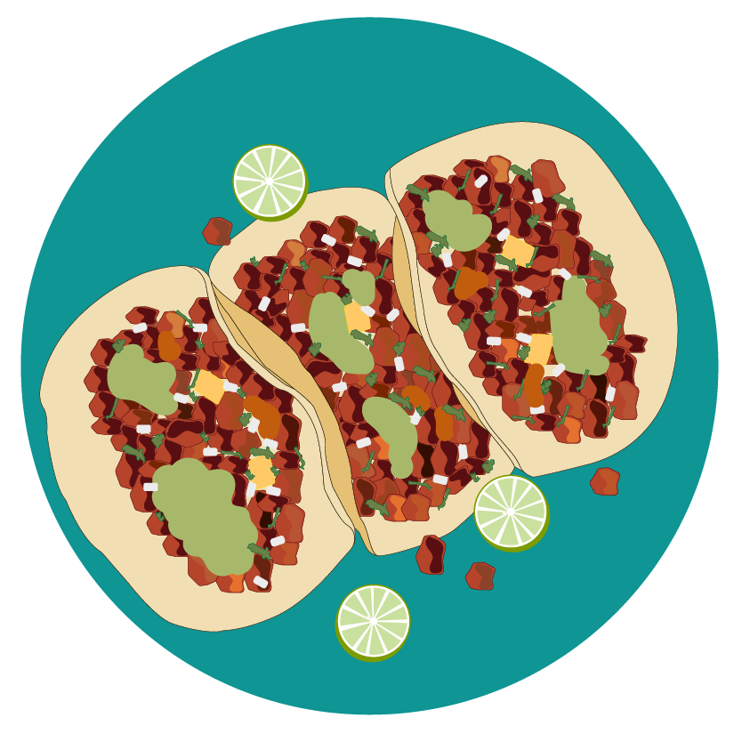
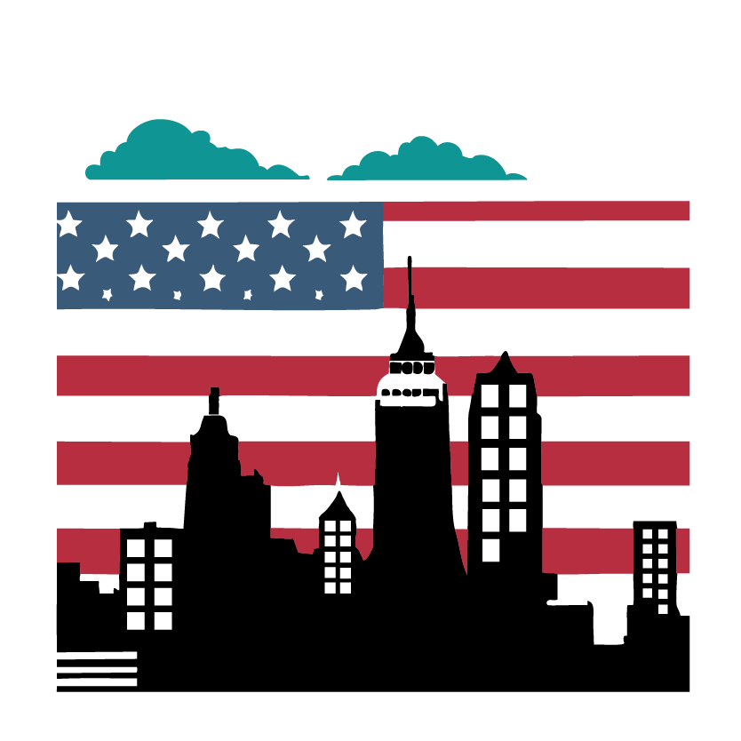

Where it all began and how I got here...
About Me
Where it all began... I need to say that I was born to amazing parents in a loving home in the State of Mexico (not Mexico City), Mexico. I had an incredibly fun childhood filled with soccer games, family trips to the beach, and great food!
I have been playing soccer competitively since I was 4 years old, and I continue to do so today. Of course, being a soccer player was a dream, but it was never my sole goal. Becoming a professional player was never my aspiration; I simply fell in love with soccer, and that's why I continue to play. I intend to play until I'm around 70
I attended middle school in Ecatepec, Mexico State, in a very dangerous area located 30 minutes from my house in Tecamac. I can only say that I had good grades, but I never really knew what I wanted to study. However, I knew that education would benefit me in the future. I would take a bus home after school because the gangs around my middle school were always causing some problems.
In high school, I excelled in calculus and chemistry, but I struggled with English, ranking as the worst in my class. It just wasn't important to me back then. Everyone else seemed to know much more than I did, so I didn't even try. I need to admit that the most enjoyable part of high school was sports; I became the captain of both the soccer and volleyball teams, and I was also part of the folkloric ballet. My school was small, and for a couple of months, I had to step up as the volleyball coach for both men and women because the school didn't have one.
Right after graduating from high school (Benemerito de las Americas) at 18 years old, I went to live in Cusco, Peru, for two years due to a religious mission. Yes, I was a missionary in the mountains, small towns, rural areas, and even in the Amazon jungle. Those two years were amazing, and I learned a lot. I fell in love with Peru and its people, food, culture, and more. I also had to study every day; I started to learn English because of my mission in Peru.
After completing my mission, I returned to Mexico and wanted to continue practicing the English I learned in Peru. I began studying Business Management online at Brigham Young University-Idaho. Two years later, after visiting Peru with my family, I decided to apply on campus and attended BYU-Idaho in person. It was there that I changed my major to Web Design and Development due to my interest in programming classes that I found enjoyable, despite having no prior coding experience. I wanted to create things and learn to code as well. So, here I am, having lived in cold Rexburg, Idaho, for the last two years. While studying at BYU-Idaho, I started working as a Graphic Designer in the Mac Lab at the Library. In this role, I handled design projects and worked on 3D printing files. Additionally, I had the opportunity to intern at Rising Up Together, where I redesigned their entire website, including the color scheme, and developed the website using the design I created for them.